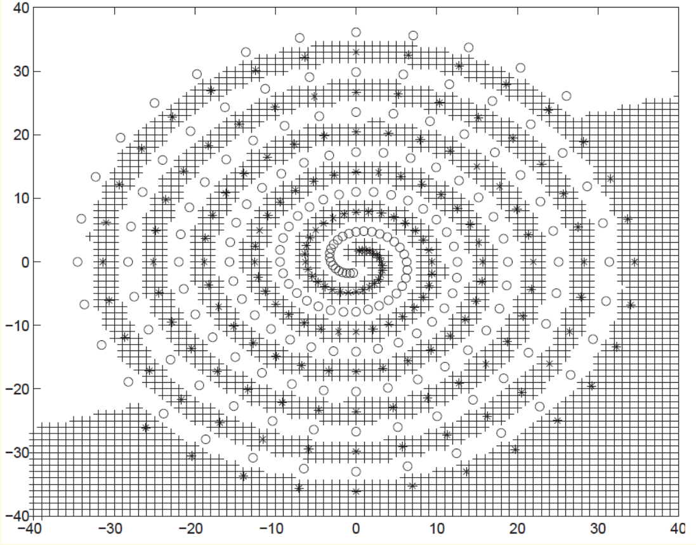
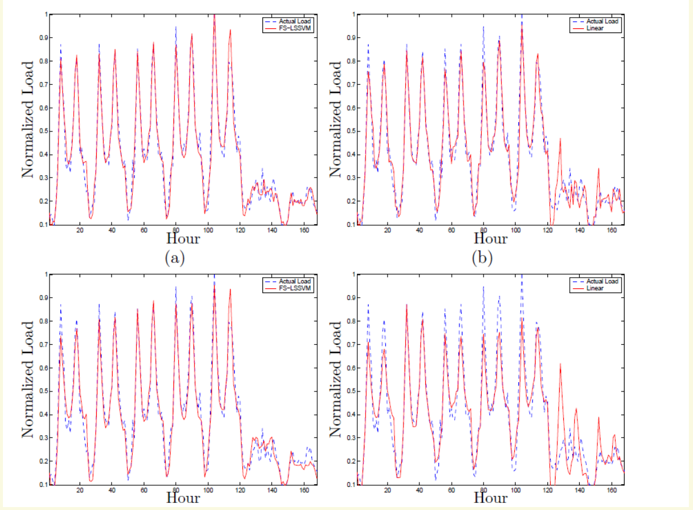

学习路线：允许偏差、改变表示、预测数值
一条直线不能把训练样本完全分开，可能因为测量噪声，也可能因为两类本来就交错。即使分类解决了，“明天的电力负荷是多少”仍需要一个连续数值。本周沿着这些问题，学习 Soft-margin SVM（软间隔支持向量机）、Kernel SVM（核支持向量机）、Support Vector Regression（支持向量回归，SVR） 与 Least-Squares SVM（最小二乘支持向量机，LS-SVM）。
- 由一个样本的带符号得分算出最小松弛量，解释 C 怎样改变取舍，并用 KKT 判断支持向量类型。
- 把二次多项式核展开成显式特征，核对内积；用 Gram matrix 判断核的必要条件，解释 RBF 核宽度。
- 画出 ε 管道，写出上下两类误差约束，理解 SVR 的两个乘子为什么相减。
- 从 LS-SVM 回归的 Lagrangian 推导线性系统，手算一个完整解，并核对预测和残差。
- 读懂 MATLAB 分类、SVR 与 LS-SVM 示例；把标准化、参数选择和性能评估放到正确的数据划分内。
主范围是 Lecture_slides_full semester.pdf 的实际页序 142–163：从 Soft Constraints 到 Short-term Prediction。辅助主线来自 Tutorial 7 的实际第7–14、16–19页；第15页和第19页第1题仅作必要回顾。第164页开始的 MAXNET，以及 ART、Hopfield，均不在本教材范围。
阅读约定：本页所有 PDF 页码均从文件第一页计数，不采用页脚旧编号。来源写为 L 或 T 时，分别指主课件与 Tutorial 7，完整文件名及可点击定位见来源索引。标为“教学补充”的推导、图和例子不是课件实验；标为“经核实的纠正”的内容附有核查依据。
重要性评价仅针对本周学习依赖：★★★★★ 5/5 核心基础；★★★★☆ 4/5 重要方法；★★★☆☆ 3/5 理解支撑；★★☆☆☆ 2/5 局部拓展；★☆☆☆☆ 1/5 背景补充。评级不表示考试命中率，也不强行把内容分到每一档。窄屏下，较长公式、表格与图像可在各自区域内横向滚动。
1 先把共用的数学语言接上
1.1 Classification / Regression（分类与回归）及维度
前置补充。一次观测由输入向量和已知目标组成。例如花瓣长度、宽度组成输入，花的品种是分类目标；马力、车重组成输入，燃油效率是回归目标。训练时知道目标，预测时只有新输入。两者都属于 Supervised learning（监督学习）。
下标 i 是样本编号，n 是训练样本数，d 是每个样本的特征数。数学中每个输入是 d×1 列向量；MATLAB 通常把所有输入按行堆成 n×d 的矩阵 X。二分类理论用 ；回归用 。程序中的字符串标签或布尔标签由软件编码，不必手动把花名替换成 ±1。
是权重， 是偏置；转置符号 T 把列向量变成行向量，因而 是标量。g 是分类得分，正负决定类别；g=0 是决策边界，恰好落在边界时需约定平局规则。回归则直接输出 ，不取 sign。回归的 f、y、残差和 ε 具有相同目标单位；分类的 ±1 和规范化得分是无量纲编码。
后面引入特征映射 后，w 改为 m×1，内积写成 。m 可能很大，甚至对应无限维空间；此时“转置相乘”理解为该空间的内积。核值 K 始终是一个标量，不是一个预测类别。
来源：T第3、8、11–13页；维度、单位及任务实例为必要前置补充。
1.2 Hard margin / KKT（硬间隔与最优性条件）短回顾
设数据线性可分。只要求分类正确，即 ，还不能决定分界面离样本多远。将 w、b 同时乘一个正数不改变边界，因此可以选择尺度，使最近点的带符号得分等于1。两条间隔边界便是 g=+1 与 g=−1；它们的欧氏距离为 ，这里假定 w≠0。
这是 Primal problem（原始问题）：直接求 w、b，最小化权重范数就是最大化规范化间隔。它要求每个点都在正确一侧且达到间隔。若两个完全相同的输入却有相反标签，这些约束互相冲突，问题无可行解。
为每个不等式引入非负 Lagrange multiplier（拉格朗日乘子） αᵢ，用 Lagrangian 把目标与约束组合。对 w、b 的导数为零，得到：
代回后得到 Dual problem（对偶问题）：只对 n 个乘子求解。数据通过样本之间的内积进入目标，这正是后面能换成核的入口。
Karush–Kuhn–Tucker conditions（KKT 条件）把原始可行、对偶可行、驻点和互补松弛结合起来。其中 表示：如果点严格远于间隔，方括号为正，乘子只能为0；如果 αᵢ>0，方括号必须为0，这个点在间隔边界。非零乘子对应 Support vector（支持向量），因为它参与 w 的展开。反过来，“在边界上”并不在退化或重复样本情况下保证 αᵢ>0。
对一个边界支持向量 s，有 。多个合适的点可以平均求 b 以减小数值误差。我们不必重学整章硬间隔；记住规范化得分、内积形式、互补条件，就能推导本周变化。
来源：T第3–6页、第19页第1题（仅必要回顾）；退化情形由 KKT 的单向蕴含补充。
1.3 Regularization / Validation（正则化与验证）
前置补充。把训练点全部记住，不等于能预测新点。Regularization（正则化）是给过于复杂的模型增加代价；本周常见的 约束特征空间中的模型复杂度。另一部分损失衡量训练目标没有被满足的程度。两部分相互竞争，而非只追求一项为零。
Training set（训练集）用于求 w、b 或核系数；Validation set（验证集）用于比较 C、核宽度等模型选择；Test set（测试集）在方案确定后用于最终评估。Cross-validation（交叉验证）把开发数据轮流分为训练折与验证折，让每个样本在它未参与拟合时被预测。例如5折中，每轮用4折拟合、1折验证，再合并验证损失。
如果先用全部数据的均值标准化，再切出测试集，训练过程已经借用了测试分布信息，称为 Data leakage（数据泄漏）。即使没用测试标签，也不是严格独立的评估。正确做法是先划分，每轮仅在训练部分拟合标准化参数，再原样应用到验证部分。第7章把这个原则落实到代码。
来源：L第153页的 validation / cross-validation；数据划分与泄漏为必要教学补充。
2 Soft-margin SVM（软间隔）：为违反间隔定价
2.1 Slack variable（松弛变量）不是错误计数
一个点靠近边界但仍分对了，要不要付出代价？
要。软间隔关心的不只是“有没有分错”，还关心是否进入希望留出的安全区。为每个样本引入 ，将目标得分从至少1放松为至少 。当 C>0 且 w、b 固定时，优化器不会选择多余的松弛，因此最小可行值是：
mᵢ 是 Functional margin（函数间隔），是标量；乘上 yᵢ 后，两类点都按“越正越正确”的同一尺度衡量。ξᵢ 是缺少多少规范化得分，不是原坐标中的距离。若 w≠0，其到所属间隔边界的垂直短缺距离才是 。
| 最小 ξᵢ | mᵢ 与位置 | 判读 |
|---|---|---|
| 0 | mᵢ≥1 | 满足间隔，包含边界 |
| 0<ξᵢ<1 | 0<mᵢ<1 | 分对了，但进入间隔 |
| 1 | mᵢ=0 | 在决策边界，需要平局规则 |
| ξᵢ>1 | mᵢ<0 | 严格位于错误一侧 |
四个样本的 (y,g) 依次是 (+1,1.4)、(+1,0.3)、(−1,0.2)、(−1,−1)。先相乘得到 m=1.4、0.3、−0.2、1；再算 max(0,1−m)，得到 ξ=0、0.7、1.2、0。第二点仍分对，却有0.7的间隔违反；第三点分错，损失大于1。因此 ξ 的总和是违反程度，不是错分点数。
来源：L第142–143页、T第7页；位置分类、数值示例与尺度解释为教学补充。
2.2 Primal objective / C（原始目标与惩罚权重）
这里 ，C>0 是人为选择的超参数。第一项希望较小的 w、较宽的间隔；第二项让每单位间隔违反付出 C 的代价。用最小 ξ 消去松弛变量，就得到 Hinge loss（合页损失） 。它在 m≥1 后为零，因此不再奖励一个已经足够安全的点继续远离边界。
在数据、核与尺度固定时，较大 C 更重视减少训练违反；较小 C 更愿意接受违反以减小范数。把目标除以 C 可看出正则项权重为 。若另一份资料用“平均损失”而非损失之和，其参数需连同 n 换算，不能直接照抄 C 的数值。
取一维两点 x=−1、y=−1 和 x=1、y=1，选对称的 b=0。对这组数据可取最优 w≥0，两点的最小松弛同为 max(0,1−w)。目标化为：
在 0≤w≤1 内，导数为 w−2C，最小点是 w=2C；若该点超过1，则这一段最低在 w=1。w≥1 时损失为零，继续增大 w 只会增加范数。所以 。C=0.1 时 w=0.2、每点 ξ=0.8，间隔宽度为10；C=1 时 w=1、ξ=0，间隔宽度为2。
两种情况都把这两个训练点分对了。变化的是“要求它们离边界多远”与付出的范数。C 增大后间隔也并不一直缩小；达到硬间隔解后，本例继续增大 C 不再改变解。
T第7页的原图给出了另一个数据集：C=0.05 时标出28个支持向量，C=100时标出7个；左图间隔较宽。它展示了一次具体比较，不能推导出支持向量数必定随 C 单调减少。
若所选特征空间内存在硬间隔可行解，足够大的 C 会恢复硬间隔解。若标签冲突或数据不可分，C 再大也不能令全部 ξ 为零，而会越来越优先压低总 hinge loss。大间隔有助于控制复杂度，但不保证对任意数据都得到更好的泛化结果。
来源：L第143页、T第7页与第19页第2题；两点解析解及极限条件为独立推导的教学补充。
2.3 Dual / KKT（对偶与支持向量的三种状态）
为间隔约束引入 αᵢ≥0，为 ξᵢ≥0 引入 μᵢ≥0。把所有约束写成“左边≤0”后相加，得到：
α、μ 都是 n×1 的乘子向量。对 w 求导得到 w=Σαᵢyᵢxᵢ；对 b 求导得到 Σαᵢyᵢ=0；对每个 ξᵢ 求导得到 。因为 μᵢ≥0，αᵢ不能超过 C。这说明 Box constraint（盒约束）不是凭空添加的截断，而是松弛代价的对偶结果。
目标仍是 Quadratic programming（QP，二次规划）形式。互补条件变成：
| 最优乘子 | 由 KKT 推出的结论 | 作用 |
|---|---|---|
| αᵢ=0 | 因 C>0，有 ξᵢ=0，故 mᵢ≥1 | 不参与 w；可能在边界，也可能严格在外 |
| 0<αᵢ<C | 第二式给 ξᵢ=0；第一式给 mᵢ=1 | Free support vector（自由支持向量），可直接算 b |
| αᵢ=C | 第一式给 mᵢ=1−ξᵢ≤1 | Bounded support vector（受界支持向量）；可在边界、间隔内或被错分 |
“αᵢ=C 就一定分错”是错误的：m=0.6、ξ=0.4 时仍分对。对于自由支持向量 s，。如果没有自由支持向量，就不能随便挑一个 α=C 的点套此式，因为其 ξ 可能非零；应由 KKT 给出的 b 的上下界或求解器确定 b。
来源：L第144页、T第7页；Lagrangian 展开和完整状态表为教学推导。
松弛允许错误，但它没有改变“只能画直线”的表示能力。接下来保留同一个优化框架，改造内积所描述的空间。
3 Kernel trick（核技巧）：先改变表示，再做线性模型
3.1 Feature map（特征映射）为什么能改变可分性
L第145页的一维示意中，一类分布在两端，另一类夹在中间。一个阈值只能把数轴切成左右两段，无法把两端合为一类。改变 C 会容忍一些违反，却不会创造两个边界。因此需要加入能表达“两端”的特征，例如平方。
用外侧两点 x=−2、2 表示 +1 类，内侧两点 x=−0.5、0.5 表示 −1 类。令 。它们在第二维分别为4、4、0.25、0.25，因而特征空间的直线 可以分开两类。得分 ，外侧为3、内侧为−0.75，符号都正确。
这只构造了一个正确分界面，没有声称已经求出规范化的最大间隔解。在原空间中边界是 x=±1 两个位置；在新空间中仍是一个超平面。L第146页的“内圈与外圈”图表达同样想法：半径等非线性特征可以把圆形关系转成线性阈值。
映射不是普遍的可分性保证。若同一个 x 带着相反标签，确定性的 φ 会把两点映到同一个位置，任何超平面仍无法同时满足硬间隔。选择不合适的映射也未必改善数据关系；核方法通常仍需软间隔。
来源：L第145–146页、T第8页；四点计算和映射图为教学示例。
3.2 Kernel function（核函数）省掉什么计算
若把输入换成 φ(x)，软间隔对偶里的 就变成 。假如我们能直接计算这个数，就无需把每一个高维坐标都列出来。这个直接计算内积的函数定义为：
x、z 都是 d×1 输入；K 是从两份输入得到一个实数的函数，φ 是同一个映射。与“相似性”直觉相比，内积定义更准确：有效核还必须满足半正定性质，核值也不必总在0到1之间。预测时先计算新点与训练支持向量的核值，再加权求和；并不需要知道新点在高维空间的全部坐标。
本教材 αᵢ始终表示非负对偶乘子。因此分类必须使用 ，进而 。这两页原图的预测式省去了 yᵢ，与同页或前页对偶中的 α 定义不一致。若另定义带符号系数 ，才可以写 ΣβᵢK+b；但 βᵢ不再都非负。T第14页也明确提示分类带 αᵢyᵢ。
来源：L第147、151页原图、L第144页对偶与 T第14页交叉核对；纠正由驻点方程直接推出。
3.3 Polynomial kernel（多项式核）：亲手展开六维特征
课件选择二维输入 、，以及二次非齐次核 。先展开平方，而不是猜一个特征向量：
每一项都能拆为“只依赖 x 的一项”乘“只依赖 z 的一项”。例如交叉项的系数2，拆成两边各一个 √2，因此可取：
按这个顺序逐项相乘相加，恰好得到上面的展开式。√2不能随意省略，否则交叉项和一次项的权重会改变。第148页原排版用横排方括号表示特征；这里统一写成带 T 的列向量，使 的维度明确为1×1。
取 x=(1,2)ᵀ、z=(3,−1)ᵀ。直接算核：xᵀz=3−2=1，所以 K=(1+1)²=4。再显式计算：
六个乘积分别对应六个特征。维度从2变成6，但直接计算核只需一个二维内积、加1、平方。一般高阶或高维映射的特征数增长更快，核计算的价值也随之增大。
来源：L第148页、T第19页第3题；具体数值代入为教学补充。
3.4 Positive semidefinite / Gram matrix（半正定与格拉姆矩阵）
前置补充并承接课件。对 n 个训练样本，把两两核值组成 n×n 矩阵 Ω，。行 i 与列 j 的交点比较第 i、j 个输入；这就是 Gram matrix（格拉姆矩阵）。内积可交换，因此 Ω 对称。
实对称矩阵 A 若对任意向量 c 都满足 ，称为 Positive semidefinite（半正定，PSD）。若每个非零 c 都严格大于0，则称 Positive definite（正定，PD）。可把 c 看成把若干特征向量相加时使用的带符号权重。内积核有一个特别直接的证明：
平方长度不可能为负；但不同向量的线性组合可能恰好抵消，所以结果可以为0，不能要求一定严格正定。这里 c∈ℝⁿ、φᵢ∈ℝᵐ。对实对称矩阵，PSD 也等价于所有特征值非负；特征值可理解为沿某些正交方向的二次型系数。
矩阵 A 的四个元素为1、2、2、1。取 c=(1,−1)ᵀ，则 Ac=(−1,1)ᵀ，cᵀAc=−2，所以它不是 PSD。相比之下，上一个多项式例子的 Gram 矩阵为 ：K(x,x)=(1+5)²=36，K(z,z)=(1+10)²=121；其行列式为36×121−16=4340>0，且首个对角元素>0，所以这个2×2对称矩阵是正定的。
L第150页以 Mercer’s theorem（Mercer 定理）介绍核的有效性。本周需要掌握的严谨判据是：一个实对称函数若对任意有限样本集合都产生 PSD Gram 矩阵，就可表示为某个内积空间的核。经典 Mercer 特征展开还附带定义域与连续性等分析条件，本周不作展开。只对手头一批训练点检查通过，不能证明函数对所有可能输入都是有效核。
来源：L第150页；原图末行混写 xₚ 与 xₙ，此处按行列定义统一为 xₙ。PSD 直觉、平方范数证明及反例为教学补充。
3.5 Common kernels（常见核）与适用条件
| 核 | 公式与参数 | 怎么理解与使用 |
|---|---|---|
| Linear kernel（线性核） | φ(x)=x；保留原始线性关系，是清楚且有用的基线。 | |
| Polynomial kernel（多项式核） | ，p为正整数 | 编码直到 p 阶的乘积特征。次数高并不自动更好，尺度和数值范围会变得敏感。 |
| Gaussian / RBF kernel（高斯／径向基核） | ，σ>0 | 仅由距离决定；同一点为1，远处趋近0。σ是宽度，σ²是其平方。 |
| Sigmoid kernel（双曲正切核） | β₀控制内积缩放，β₁为偏移；并非任意实参数与输入域都得到 PSD 核。 |
这里四种 K 都是标量；σ的量纲与用于计算距离的输入相同。混合不同量纲的特征时应先处理尺度。β₀、β₁也必须使 tanh 内部的量可作为无量纲数使用。RBF 的 σ不是 SVR 的 ε，也不是 LS-SVM 的 γ。
取输入 x=0、β₁=−1，则 K(0,0)=tanh(−1)<0。仅包含这个样本的一阶 Gram 矩阵就不是 PSD，而任何内积核都应有 K(x,x)=‖φ(x)‖²≥0。这个反例已足以推翻“任意参数都有效”，不需要猜一套通用参数范围。课件的核列表需结合第150页的有效性条件阅读。LIBSVM 作者资料也指出 sigmoid 的核矩阵可能不满足正定性。
来源：L第149–150页、T第9页；反例为教学补充。外部核验：LIBSVM 作者 FAQ（核的选择）。
3.6 Kernel width（核宽度）：局部影响能扩散多远
固定一个中心 z，让输入 x 沿数轴移动。RBF 核曲线就是“离中心这个距离，还剩多少内积相似度”。σ小，曲线窄，稍远的点几乎互不影响；σ大，曲线宽，更多点共享相似响应。图中只画单个核函数，不是完整训练后的决策函数；实际模型还要把许多核乘以系数相加。
令 r=‖x−z‖=1。σ=0.5 时，K=e⁻²≈0.1353；σ=1时，K=e⁻⁰·⁵≈0.6065；σ=2时，K=e⁻⁰·¹²⁵≈0.8825。对于不同且相隔固定距离的点，σ→0时核值趋近0；σ→∞时趋近1。很宽的核使许多点难以区分，很窄的核给模型很强的局部适应能力；是否过拟合还取决于 C、数据密度和噪声。
L第153页写到最近异类点之间的距离。应把它看作一种可能的尺度线索，不能作为 σ 的定义或普遍最优取值；相反标签的重复输入会使该距离为0，而 Gaussian 核要求 σ>0。教材采用该页同时提到的验证集／交叉验证来选择参数。
有的软件把核写成 ，则 。本教材用下标 K 区分此核参数和 LS-SVM 的误差权重 γ。MATLAB 的 KernelScale通过缩放输入控制核尺度；不要在没有对齐指数定义时，把它、σ、σ²和 γ 混填成同一个数。
来源：L第149、153页、T第9–10页；图与数值为教学补充。接口核验：MathWorks fitcsvm / KernelScale。
3.7 RBF network / RBF kernel SVM（径向基网络与核 SVM）
两者都可能输出若干 Gaussian 函数的加权和，但“函数长得像”不等于“训练方式一样”。RBF network 通常先选中心和宽度，得到隐层响应，再学习输出权重；给定隐层后，可用最小二乘学习线性输出层。Broomhead–Lowe 的文章第7–8页展示了这种三层结构与固定非线性基函数后的线性权重求解。
RBF kernel SVM 的每个候选中心是一个训练输入，系数由最大间隔／hinge-loss 的 QP 决定；α=0的训练点在预测展开中消失。LS-SVM 则用平方误差和等式约束，通常保留全部训练点。要辨认模型，检查目标函数、约束和中心／系数的获得方式，不要仅看最后曲线是否由 Gaussian 相加。
来源：course_files_export/CS-Broomhead-Lowe1988.pdf，实际第7–8页；与 L第151、159–161页的教学对照。这里不重复第4周 RBF 网络整章。
4 从核矩阵到分类器：训练、预测、验证
4.1 Kernelized dual（核化对偶）与预测流程
软间隔对偶中唯一需要数据的地方是内积。用 Ωᵢⱼ替换它，得到：
其中 Qᵢⱼ=yᵢyⱼΩᵢⱼ，Q、Ω均为 n×n。若 Ω 为 PSD，则对任意 v 有 ，其中 。因此对偶目标为凹二次函数，在可行凸集合上求最大；合法核是保持这一性质的关键。
- 在训练数据上拟合预处理，选择候选核、C和核参数。
- 计算训练样本两两的 Ω，求解 n 维 QP，得到 α。
- 保留 αᵢ>0的支持向量，用自由支持向量算 b；浮点实现会使用容差。
- 对新输入使用训练时的预处理，计算它与支持向量的核值，求得分并取符号。
求一个新点的得分时，核向量长度是支持向量数；n个训练点的完整 Gram 矩阵则占用 n²个元素。核技巧避免显式高维特征，并没有消除大量样本带来的存储和求解成本。对于线性核，还可预先合成 w 来加快预测。
假设已训练得两支持向量标签 +1、−1，乘子均为0.8，b=0.1。新点对它们的核值分别为0.9、0.2，则 g=0.8×(+1)×0.9+0.8×(−1)×0.2+0.1=0.66，输出 +1。对一个更靠近负类的新点，核值改为0.2、0.9，g=0.16−0.72+0.1=−0.46，输出 −1。若漏掉 yᵢ，两项都相加，会丢掉正负类相互抵消的机制。
来源：L第151–152页、T第10页；凸性说明和预测数值为教学补充，预测式已补齐标签因子。
4.2 Model selection（模型选择）是训练流程的一部分
C和σ不是同一种控制：C改变“违反有多贵”，σ改变“哪些输入彼此有多相似”。因此要联合比较，例如预先定义若干 C 与 σ 的组合，在相同验证折上比较。每一组都重新训练，只使用训练折的均值、标准差和样本计算核。验证损失最低的组合随后在完整开发集上重训，再评估一次保留测试集。
课件提出 Gaussian 或 polynomial 作为候选，并建议借助领域知识设计有意义的相似关系。这是方法选择的起点，不是软件默认值声明，也不说明高维映射必定线性可分。可同时保留 linear 基线：若简单模型已经表现好，增加灵活性可能没有收益。
二分类通常报告错分比例；回归报告 MSE 或 RMSE，不能混用。若用同一交叉验证分数反复挑选很多方案，再把最低值当作完全独立的最终成绩，会偏乐观；保留测试集，或在外层再做评估，可以把选择与报告分开。时间序列预测还需按时间先后划分，不能让未来参与过去的训练。
来源：L第152–154页、T第10页；评估隔离与时间划分为必要教学补充。
到这里，模型输出仍是类别。现在把目标换成连续数值：需要的不是离分类边界尽量远，而是在允许的误差范围内尽量平滑。
5 Support Vector Regression（支持向量回归）：只为超出管道的误差付费
5.1 ε-insensitive loss（ε不敏感损失）与管道
预测负荷、温度或燃油效率时，目标 y 是一个数，而不是 ±1。测量本来就有波动，要求每个训练点都恰好命中通常没有必要。SVR 选择一个函数 f，让误差在 ±ε 内的点不产生损失，同时通过较小的 ‖w‖保持特征空间中的函数较平滑。
r 是带符号残差，正数表示实际值高于预测；ε≥0是允许误差，和目标同单位。对于固定 x，区间 [f(x)−ε,f(x)+ε] 的半宽是 ε，总宽是 2ε。这不是置信区间，也没有自动附带覆盖概率。管道上下界是预测加减 ε，不是分类中的 g=±1。
先看中心实线 f，再看两条虚线。上侧样本到上边界的竖直距离才是超额损失；下侧样本类似。误差 |r| 本身与管外部分 |r|−ε不能混为一谈。ε越大，给定函数下的零损失区域越宽；C则决定管外每单位超额误差的代价。改变 ε 后重新训练，函数也可能变化，所以支持向量数量不必按简单公式变化。
三个点的预测都为10，真实值为10.2、11.1、9.0；残差为0.2、1.1、−1.0。ε=0.5时，损失分别为0、0.6、0.5，总和1.1。ε改为1时，损失为0、0.1、0，总和0.1。第二次的零损失不表示最后一个点被准确预测，只表示它恰好到达管道边界。
来源：L第155–156页、T第11页；图与数值为教学补充。T第11页的“管内系数为零”在下文精确化为严格管内。
5.2 Two slack variables（两类松弛）与 SVR primal
L第155页首先给“所有点都必须进管道”的版本：最小化 ，约束 。这个问题可能没有可行解，例如同一个输入的两个目标相差超过2ε。软化办法是分别允许向上和向下越界。
此处 φᵢ=φ(xᵢ)∈ℝᵐ，w∈ℝᵐ；两组 ξ 都是 n×1。ξᵢ量出实际值高于上边界的超额，ξᵢ*量出实际值低于下边界的超额；星号只是另一组变量的标记，不是最优解或共轭。C>0。固定 f 时：
当 ε≥0时，一个点不可能同时在管道上方和下方，所以最优的两类松弛不会同时为正。上一例 ε=0.5时，三点的 (ξ,ξ*) 是 (0,0)、(0.6,0)、(0,0.5)。分类只关心“有没有满足带标签的间隔”，回归必须区分目标高于和低于预测，这就是需要两类松弛的原因。
L第155页原图把预测写成 w·x−b；第156–158页的两个约束和 Lagrangian 使用 w·x+b。单独采用任一种约定都可以，但不能在连续推导中混用。本教材全程用 +b；若从第155页的旧符号出发，设 即可转为这里的定义。标量残差的范数也统一写成绝对值。
来源：L第155–156页原图、T第11页；核化写法与松弛解释为教学展开。
5.3 SVR dual（回归对偶）：为什么系数是 α−α*
对上侧约束使用 αᵢ≥0，对下侧约束使用 αᵢ*≥0，对两个非负松弛约束使用 ηᵢ、ηᵢ*≥0。四组乘子都是 n×1。写成与课件同义的 Lagrangian：
第一类约束中的 w 项为负，第二类为正，因此对 w 求导时两个乘子相减。分别令偏导数为零，得到：
于是0≤αᵢ,αᵢ*≤C。把 βᵢ=αᵢ−αᵢ* 记作带符号的展开系数，代回并消去 w、b、ξ，得到：
这里 y 是连续目标，不能照搬分类的 αᵢyᵢ形式；β也不能像分类乘子一样限定为非负。课件第158页写的是线性内积，替换为 K 就得到核 SVR。预测直接输出：
对 ε>0，KKT 让严格管内点的两类约束都不活跃，因此 αᵢ=αᵢ*=0；在上边界 rᵢ=ε的点可能有0<αᵢ<C；在下边界 rᵢ=−ε的点可能有0<αᵢ*<C；严格越出上／下边界时，对应乘子达到 C。在管道边界上即使没有损失，也可能是支持向量。它们“撑住”管道的位置，不能把“支持向量”等同于“有正损失的点”。ε=0时两条边界重合，须直接按互补条件处理退化情形。
若上边界点 s 满足0<αₛ<C，则 ；若是0<αₛ*<C 的下边界点，则把 −ε 改成 +ε。两式都直接来自“该点恰好落在对应边界”。若没有自由乘子，应使用 KKT 界限或求解器给出的偏置。
来源：L第157–158页原图、T第11、14页；核形式、边界系数及 b 的恢复为教学推导。
SVR 通过零损失区让不少系数消失。若改为每个残差都付平方代价，并用等式直接记录残差，会得到另一种求解结构。
6 Least-Squares SVM（最小二乘支持向量机）：从优化到线性方程
6.1 Squared error / Equality constraint（平方误差与等式约束）
L第159–161页使用的是回归形式。它令每个残差 成为一个可正可负的实数变量，不设置 ε 的免费区间。让目标等于预测加残差，约束就总能通过选择 eᵢ满足：
γ>0 是误差权重；w∈ℝᵐ，b为标量，e∈ℝⁿ。e与目标同单位。较大 γ 更重视拟合目标；较小 γ 更重视较小范数。将目标除以 γ，会看到范数项的权重为1/(2γ)。LS-SVM 中的 γ不是 Gaussian 指数里控制宽度的 γₖ；本教材把 RBF 宽度独立写成 σ。
“等式约束”不代表强迫预测穿过所有样本：等式中有残差 e，预测可以不等于 y。对比 SVR，e可以为负，ξ与ξ*则不能为负。平方误差会使大残差付出更快增长的代价，因此对异常值可能更敏感。这里讨论原始 LS-SVM，没有引入稳健损失或稀疏化改造。
来源：L第159页、T第12页；目标解释与符号区别为教学展开。外部核验：KU Leuven StatLSSVM 的回归模型。
6.2 Linear KKT system（线性 KKT 系统）的逐步推导
对等式约束引入实数乘子 αᵢ。等式乘子不要求非负，也没有0到C的盒约束。沿用 L第160页的负号约定：
接下来分别对四类变量求导。每一步都消去一种未知量或恢复一个约束：
第三式告诉我们 。把第一式代入第四式的预测项：。再代入 eᵢ，得到对每个训练样本成立的标量线性方程：
核对“自己的残差”只给第 i 个系数加 γ⁻¹，所以加的是单位矩阵 I 的对角线，不是给 Ω 的每个元素都加同一个数。将 n 条方程合并，再附上 Σαᵢ=0：
左侧分块矩阵记为 A，维度是 (n+1)×(n+1)。Ω、I均为 n×n；1ₙ是 n×1 全1列向量；α、y均为 n×1；最后一个未知数 b 是标量。第一块方程是“预测+残差=目标”，最后一行来自对 b 的驻点条件。把 b 放在首位也可得到等价矩阵，但必须同步调整行、列与右端，不能把两种排法拼接。
令 H=Ω+γ⁻¹I。若 Ω是 PSD、γ>0，则对非零 c 有 ，所以 H 为 PD。整个 A 却不是 PD：向量 (0,…,0,1) 的二次型为0。A 仍可逆：若 Hα+b1=0 且1ᵀα=0，左乘 αᵀ得 αᵀHα=0，故 α=0，再得 b=0。这给出线性系统唯一解的依据。
求得 α、b 后，新点的回归值是 。实际数值计算应解 A·sol=rhs，例如 MATLAB 的反斜杠；不需要显式构造 A⁻¹。所谓“无需 QP”是说不必调用带不等式约束的 QP 求解器，原始目标本身仍是二次优化。
来源：L第160–161页、T第13页；导数到矩阵的中间步骤、可逆性与数值求解解释为教学推导。
6.3 完整手算：一个 3×3 的 LS-SVM 回归系统
题设。一维训练输入 x₁=0、x₂=1；目标 y₁=1、y₂=3。选 RBF 核 ，令 ，γ=2。这个宽度专为便于手算而选，不代表经验最优值。
第一步：算出核矩阵
同一点的距离为0，两个对角元素都是1；跨点距离为1，因此 K(0,1)=exp(−ln2)=1/2。于是：
第二步：按未知量顺序组装并消元
最后一行先给 α₂=−α₁。代入第一行得到 α₁+b=1；代入第二行得到 −α₁+b=3。两式相加得2b=4，所以 b=2；再得 α₁=−1、α₂=1。负系数是允许的，因为这里是等式乘子。
第三步：写出预测函数并核对训练残差
因此 e=y−ŷ=(−0.5,0.5)ᵀ；γe=(−1,1)ᵀ正好等于 α，且 Σα=0。训练点没有被精确穿过，是因为 γ有限、误差与范数正在折中。
第四步：预测中点，复算目标
当 x=0.5，两侧距离都为0.5，两个核都为 ，正负系数相消，所以 f(0.5)=2。权重范数不必显式知道 w，可算 。误差平方和为0.25+0.25=0.5；总目标为½×1+(2/2)×0.5=1。这些计算均可逐项核对。
依据：L第159–161页、T第13页的模型；本例数据、参数与运算全部为自设教学补充，已用数值线性求解复核。
6.4 Sparsity / Classification variant（稀疏性与分类形式的区别）
Sparsity（稀疏性）指许多展开系数恰好为0。标准 SVM 的 hinge loss 在安全区为0，SVR 的 ε损失在管内为0，KKT 因而允许许多点不参与预测。LS-SVM 则有 αᵢ=γeᵢ；只要残差不为0，就有非零系数，所以通常是 Dense solution（稠密解）。但“通常稠密”不等于数学上保证每个 α 都非零：若某点 eᵢ=0，该 αᵢ就是0。
因此 LS-SVM 求解形式更简单，却不一定总是计算更便宜。直接存稠密核矩阵需约 n²个数，通用稠密线性求解通常需要立方量级运算；预测一个新点通常要用 n 个核值。大样本时仍需考虑内存与算法。平方误差又更重视大残差，不能把 LS-SVM 一概称为“更准确的 SVM”。
分类形式辨析（教学补充）。LS-SVM 也可用于二分类，但常见分类原始约束是：
目标仍为范数加平方误差；此时 eᵢ是“相对带符号目标间隔1的偏差”，不是回归中的 yᵢ−fᵢ。同样求导会出现 w=Σαᵢyᵢφᵢ、Σαᵢyᵢ=0；矩阵使用带标签的 ，最终分类输出 sign(ΣαᵢyᵢK+b)。
这与L第159–161页的回归矩阵有不同标签位置。不能因为方法名有 SVM，就把回归的真实数值 y 乘到每个核系数上。也可用回归形式拟合 ±1 后取符号，但那时系数记号和含义应按回归推导解释。教材本章及 MATLAB 从零实现均采用课件的回归形式。
来源：T第14、18、19页第4题；分类／回归的对照外部核验：J. Suykens，LS-SVM core models，第8页。1999年的 Suykens–Vandewalle 论文题名为 classifiers；本周推导形式以实际公式为准。
7 MATLAB 实践：知道每段代码在做什么
本章以 Tutorial 的代码为起点，补齐变量、数据划分和解释。fitcsvm、fitrsvm、fitcecoc及相关交叉验证接口需要 Statistics and Machine Learning Toolbox；从零 LS-SVM 只用基本矩阵运算。下方代码经过静态核对，未在 MATLAB 中执行；手算例题与 LS-SVM 矩阵运算已用独立数值计算复核。资料里的绘图及收敛输出不作为本次运行结果。
7.1 Binary / Multiclass classification（二分类与多分类）
必要回顾。T第15页先从 fisheriris 删除 setosa，仅保留两类，用 meas(inds,3:4) 的花瓣长度与宽度作为两列输入，species(inds)作标签。fitcsvm(X,y)在该示例中训练线性二分类器；ClassNames查看标签顺序，SupportVectors取得模型保留的样本。散点图中的黑圈只是帮助观察哪些点参与模型，不能证明测试精度。
T第16页的 One-versus-rest（逐类对其余，亦称 one-versus-all）思路是：有 k 类，就训练 k 个二分类器，第 j 个回答“是不是第 j 类”。这不改变单个 SVM 的二分类定义，而是把多个得分组合起来。以下保留其 RBF 思路，补齐训练集和测试集变量；C与尺度暂固定为1，只用于演示。
% 教学补充：完整 one-versus-rest RBF 示例
load fisheriris
X = meas(:,3:4); % 150-by-2
Y = string(species); % 150-by-1 labels
rng(1)
part = cvpartition(Y,'HoldOut',0.2);
tr = training(part); te = test(part);
classes = unique(Y(tr));
SVMModels = cell(numel(classes),1);
scores = zeros(sum(te),numel(classes));
for j = 1:numel(classes)
isClass = (Y(tr) == classes(j));
SVMModels{j} = fitcsvm(X(tr,:),isClass, ...
'ClassNames',[false true], ...
'Standardize',true, ...
'KernelFunction','rbf', ...
'KernelScale',1,'BoxConstraint',1);
[~,sj] = predict(SVMModels{j},X(te,:));
scores(:,j) = sj(:,2); % true 的得分，按 ClassNames 顺序
end
[~,bestClass] = max(scores,[],2);
pred = classes(bestClass);
testError = mean(pred ~= Y(te));第一段把每行对应一个样本的 X、Y同步切分，rng固定随机过程以便重复划分。循环中 isClass只取训练标签；其 true 对应当前类，false 对应其余类。Standardize由这个训练子集估计输入尺度，模型会在 predict时应用同样的变换。BoxConstraint对应 C；KernelScale与核距离尺度有关。
predict返回的 sj有两列；显式设置 ClassNames为 [false true]，才能清楚地取第二列。scores是测试样本数×类别数，按行取最大得分得到类别下标，再映射回名称。SVM 得分不是自动校准的概率，不同二分类器的原始分数可比性也需实际评估；这是 Tutorial 的基本组合规则，不能把0.8分解释成80%概率。
同页第二段使用 Error-correcting output codes（纠错输出码，ECOC）接口，让软件组合二分类器。原代码的 templateSVM('Standardize',true)没有指定 RBF，不能因为页面上半段用了 RBF 就认为下半段也是 RBF。若要保持 RBF，应明确写出：
% 教学补充：沿用上段 X、Y、tr、te
learner = templateSVM('Standardize',true, ...
'KernelFunction','rbf','KernelScale',1,'BoxConstraint',1);
Mdl = fitcecoc(X(tr,:),Y(tr),'Learners',learner, ...
'Coding','onevsone');
CVMdl = crossval(Mdl,'KFold',5);
cvError = kfoldLoss(CVMdl);
yp = predict(Mdl,X(te,:));
finalError = mean(yp ~= Y(te));One-versus-one（两两分类）为每对类别训练一个模型，共 k(k−1)/2 个；本例三类为3个。它和前面的逐类对其余恰好都训练3个，但每个模型的训练目标不同。ECOC 按编码与二元损失组合结果，不能简单等同于手写 OvR 的最大正类得分。
T原代码 crossval(Mdl)默认做10折，这里显式选5折便于理解。kfoldLoss估计未参与该折训练的样本损失；它不是对训练集原预测做重复打分。此代码只评估预先指定的参数，若据 cvError 调参，最后的测试集仍应保留到方案确定以后。
来源：T第15页（简短回顾）、第16页。接口核验：MathWorks fitcsvm、fitcecoc（内存数据默认 one-versus-one）。补齐数据划分与显式 RBF 为教学改写。
7.2 fitrsvm（回归训练）：收敛、损失和泛化是三件事
T第17页用 carsmall：X=[Horsepower,Weight]把马力与车重作为两列，Y=MPG是每加仑行驶英里数。下面先保留资料关键调用，便于认出每一个接口。
% Tutorial 7 实际第17页的核心示例
load carsmall
rng('default')
X = [Horsepower,Weight];
Y = MPG;
Mdl = fitrsvm(X,Y);
convergedRaw = Mdl.ConvergenceInfo.Converged;
MdlStd = fitrsvm(X,Y,'Standardize',true);
convergedStd = MdlStd.ConvergenceInfo.Converged;
trainMSE = resubLoss(MdlStd);不标准化时，两列的数值量级不同，可能使距离或求解的数值条件不理想。标准化通常会改善尺度，但没有“标准化必定收敛”的保证。Tutorial 和 MathWorks 的这份示例观察到前者 Converged=0、后者为1；这是该示例的输出，不保证任意数据、版本或求解参数都相同。收敛只说明满足了算法的停止条件，没有说明测试误差大小。
resubLoss这里报告训练数据上的 Mean squared error（均方误差，MSE）；SVR 训练目标中的损失却是 ε-insensitive loss，两者不同。MSE 定义为 ，q为参与评估的样本数，单位是目标单位的平方；Root mean squared error（均方根误差，RMSE）是其平方根，恢复为 MPG 等目标单位。
下面是对资料示例的评估补充。删除输入／目标缺失的行只是确定本例可用的观测；如果选择填补缺失值，填补规则必须只从训练部分学习。未显式指定核时该回归示例是线性模型；这里有意明确选择 RBF。
% 教学补充：缺失行处理、开发集交叉验证、独立测试
valid = all(isfinite(X),2) & isfinite(Y);
X = X(valid,:); Y = Y(valid);
rng(1)
p = cvpartition(numel(Y),'HoldOut',0.2);
tr = training(p); te = test(p);
cvMdl = fitrsvm(X(tr,:),Y(tr), ...
'Standardize',true,'KernelFunction','rbf', ...
'KernelScale',1,'BoxConstraint',10,'Epsilon',0.5, ...
'KFold',5);
validationMSE = kfoldLoss(cvMdl);
finalMdl = fitrsvm(X(tr,:),Y(tr), ...
'Standardize',true,'KernelFunction','rbf', ...
'KernelScale',1,'BoxConstraint',10,'Epsilon',0.5);
yp = predict(finalMdl,X(te,:));
testRMSE = sqrt(mean((Y(te)-yp).^2));这里 ε=0.5表示允许上下各0.5 MPG的误差，管道总宽1 MPG；标准化只作用于输入 X，并未把 Y 的单位改掉。这组参数是演示选择，不是已验证最优值。真实选择时用开发集验证比较 C、KernelScale 与 ε 的组合，再用同一流程重训；不能通过不断查看 testRMSE 来挑参数。
来源：T第17页；评估代码为教学补充。MathWorks fitrsvm（carsmall 示例、Epsilon 与交叉验证）用于核对接口和资料中的收敛观察。
7.3 LS-SVM from scratch（从零组装 LS-SVM）
T第18页以带噪声的正弦函数演示 LS-SVM 回归。这里保留其核心代码并增加尺寸注释。输入是一维列向量；相减使用 MATLAB 的隐式扩展。
% Tutorial 7 实际第18页：增加尺寸与意义注释
rng(1);
x = linspace(-5,5,100)'; % 100-by-1
y = sin(x) + 0.1*randn(size(x)); % 100-by-1
gam = 10; sig2 = 0.5; % gamma 与 sigma^2
N = numel(x);
Omega = exp(-(x - x').^2/(2*sig2)); % 100-by-100
A = [Omega + eye(N)/gam, ones(N,1);
ones(1,N), 0]; % 101-by-101
sol = A \ [y;0]; % 101-by-1
alpha = sol(1:N); b = sol(end);
xt = linspace(-5,5,400)'; % 400-by-1，仅绘图网格
Kt = exp(-(xt - x').^2/(2*sig2)); % 400-by-100
yt = Kt*alpha + b; % 400-by-1
plot(x,y,'o',xt,yt,'r-','LineWidth',2)数据段。linspace生成100个输入，转置后为列；randn添加标准差0.1的模拟 Gaussian 噪声。rng(1)只固定这个伪随机演示，不能保证其他语言生成完全相同的噪声。gam=10是平方误差权重；sig2=0.5是 σ²，所以指数分母为2×0.5，而不是再将0.5平方一次。
核段。x-x'把100×1列与1×100行扩展为100×100矩阵，第(i,j)项就是 xᵢ−xⱼ；.^2是逐元素平方，不能写成矩阵平方 ^2。exp逐元素形成 Ω，每个对角元素为1，矩阵应对称。若旧 MATLAB 不支持这种隐式扩展，可用 bsxfun(@minus,x,x')。
求解段。eye(N)/gam只加到对角线；ones加上 b 对所有样本相同的贡献；最后一行确保系数之和为0。A\[y;0]直接解101个线性方程。sol(1:N)和 sol(end)必须与矩阵采用的 [α;b] 顺序相同。
预测段。400个新点对100个训练点形成 Kt；行是新点，列是训练中心，故 Kt·α的结果为400×1。如果写成100×400就无法右乘100×1的 α。这400个点只是画曲线的位置，没有独立观测目标，不能把密集平滑曲线当作测试精度。
% 教学补充：核对线性方程和残差关系
trainPred = Omega*alpha + b;
residual = y - trainPred;
linearResidual = norm(A*sol - [y;0]);
kktResidual = norm(alpha - gam*residual);
sumAlpha = sum(alpha);
nonzeroCount = sum(abs(alpha) > 1e-8);前三个诊断数应在合理浮点误差内接近0；若偏差很大，先检查核分母、矩阵拼接和未知量顺序。nonzeroCount使用数值阈值来避免把舍入误差当作非零。T第18页说该示例100个系数非零；本教材只据此解释通常稠密，未把它当成本次 MATLAB 运行结论。
多维输入时，(x-x').^2不能直接照搬成矩阵 X 的写法。对 N×d 的 X，应先构造 N×N 的平方距离：D2=sum(X.^2,2)+sum(X.^2,2)'-2*(X*X')；仅因舍入产生的微小负数可截到0，然后算 exp(-D2/(2*sig2))。这使用恒等式 ‖u−v‖²=‖u‖²+‖v‖²−2uᵀv，每行距离把 d 个分量的差平方相加。
来源：T第18页、L第160–161页；尺寸注释、诊断及多维扩展为教学补充。T提及的 LS-SVMlab提供现成工具，但理解本例不需要安装该工具箱。
7.4 Fold-local preprocessing（逐折预处理）：防止数据泄漏
标准化通常按列执行 ，其中 μⱼ、sⱼ只由当前训练部分的第 j 列估计；z是无量纲值。如果训练部分某列为常量，应明确处理零标准差，例如本示例设 sⱼ=1，避免除零。预测时存储并复用 μ、s，不重新拟合它们。
训练输入为1、3，验证输入为100。训练均值是2；若把验证值也纳入，均值变成104/3≈34.67，训练点的表示已经受未来评估数据影响。正确流程不需要知道100就能确定训练变换，随后把100代入同一个变换即可。
对于手写 LS-SVM，下面给出开发集内每一折应该包含的完整拟合单元。假设 Xdev 为开发输入、ydev 为对应目标；fold是只在开发集上建立的交叉验证划分对象，k是当前折，gam与sig2是候选参数。重复这些步骤比较候选组合，再用最佳组合在完整开发集重训；测试集只参与最终预测。
% 教学补充：一折 LS-SVM 训练/验证单元
itr = training(fold,k); iva = test(fold,k);
Xtr = Xdev(itr,:); ytr = ydev(itr);
Xva = Xdev(iva,:); yva = ydev(iva);
mu = mean(Xtr,1); scale = std(Xtr,0,1);
scale(scale==0) = 1;
Ztr = (Xtr-mu)./scale;
Zva = (Xva-mu)./scale; % 复用训练参数
n = size(Ztr,1);
Dtr = sum(Ztr.^2,2)+sum(Ztr.^2,2)'-2*(Ztr*Ztr');
O = exp(-max(Dtr,0)/(2*sig2));
A = [O+eye(n)/gam,ones(n,1);ones(1,n),0];
s = A \ [ytr;0];
Dva = sum(Zva.^2,2)+sum(Ztr.^2,2)'-2*(Zva*Ztr');
Kva = exp(-max(Dva,0)/(2*sig2));
yhat = Kva*s(1:n)+s(end);
foldMSE = mean((yva-yhat).^2);这里 Kva 是验证样本数×训练样本数；验证样本不能成为拟合时的核中心。若还要标准化 y，也必须用训练目标的均值、尺度，并在输出时做逆变换；ε和其他与目标尺度有关的超参数需按新单位解释。若使用 Standardize=true，直接把原始各折数据交给训练函数，让每个拟合对象保存自己的尺度；不要先对整个数据集调用 zscore再交叉验证。
对负荷预测，训练集必须早于验证／测试时间。构造“过去24小时→下一小时”的样本时，每个输入只能包含预测时刻已经可知的历史。使用滚动或扩展时间窗口验证，避免随机打散把未来规律泄漏给过去；归一化的最大值、缺失值填补和特征筛选也服从同一原则。
依据：L第153页验证原则、T第16–18页程序结构；本节为必要工程教学补充，代码明确展示训练与验证的依赖边界。
8 读懂课件的两个应用图
8.1 Two-spiral classification（双螺旋分类）
L第162页展示两条彼此缠绕的螺旋：圆圈和星形点沿交错轨迹分布。先沿其中一条轨迹从中心向外看，会发现另一类反复出现在它的两侧；单条直线无法跟随这样的区域变化。这是使用非线性核表示的典型动机。

两条坐标轴范围约为−40到40，表示图中的两个输入坐标，未标物理单位。图上还出现规则的网格状符号区域；可观察其形状沿螺旋缠绕，但该页没有图例明确每种网格标记的训练／测试身份，不能把每个符号都断言为已知类别的独立测试样本。读者应把注意力放在复杂、弯曲、交错的区域可以由核模型表达，而不是从密集图形猜测精度。
本页没有提供生成数据、核参数、训练测试划分或数值指标。由图不能算出准确率、支持向量数量，也不能证明模型在未见样本上的泛化性能。本教材保留原图供理解，不声称完成复现。
来源：Lecture_slides_full semester.pdf，实际第162页；原图裁取绘图区，保留坐标与符号。
8.2 Short-term prediction（短期负荷预测）
第163页的四幅小图，横轴都是 Hour（小时），纵轴是 Normalized Load（归一化负荷）。归一化后约0.1到1的刻度不等于原始功率单位；没有归一化公式和原始数据，不能把0.8换算成多少 MW。

按图例，蓝色虚线是 Actual Load；左列红线标为 FS-LSSVM，右列红线标为 Linear。先比较峰出现的时间，再比较峰高，最后看低谷及后段变化：曲线有重复峰谷，后段负荷模式明显降低；一些位置红蓝重合，另一些位置存在峰值、相位或低谷差异。下排若干峰附近的偏差更容易看见。这说明读回归图不能只问“曲线大致像不像”。
图没有解释 FS 前缀、上下两排各代表什么设置，也未给预测步长、输入滞后、样本数、超参数、测试划分或误差表。本教材保留其图例名称，不将其直接当作前一节普通 LS-SVM 的精确实验配置，也不编造 RMSE、优胜百分比或复现结果。可做的结论是：该图展示了两种标记模型的曲线与实际归一化负荷的对照；可靠的模型优劣比较还需要一致的评估条件和原始数据。
如果日后获得数据，可把过去时刻的负荷和当时可知的外生量组成输入，目标设为未来指定时刻的负荷，再按第7.4节的时间顺序验证。这里讲的是如何设计评估，不是对原图未公开实验的补写。
来源：Lecture_slides_full semester.pdf，实际第163页；原图裁取四个坐标面板。资料没有足够实验信息做复现。
9 把三类模型放到同一张图景里
9.1 Objective / Constraint / Output（目标、约束与输出）的比较
三类模型都可使用同一核 K，都有范数惩罚，也都输出“核值的加权和加偏置”。真正决定差异的是目标 y 的含义、损失形状、约束和系数如何得到。下表中 f 或 g 都用 +b；γ只指 LS-SVM 的误差权重。
| 比较项 | Soft-margin kernel SVM | ε-SVR | LS-SVM 回归 |
|---|---|---|---|
| 任务与目标 | 二分类；yᵢ=±1 | 回归；yᵢ为实数 | 回归；yᵢ为实数 |
| 目标函数 | ½‖w‖²+CΣξᵢ | ½‖w‖²+CΣ(ξᵢ+ξᵢ*) | ½‖w‖²+(γ/2)Σeᵢ² |
| 数据损失 | max(0,1−yᵢgᵢ) | max(0,|yᵢ−fᵢ|−ε) | (yᵢ−fᵢ)² |
| 约束 | yᵢgᵢ≥1−ξᵢ；ξᵢ≥0 | 管道上、下两组不等式；两松弛非负 | yᵢ=fᵢ+eᵢ；eᵢ可正可负 |
| 主要求解形式 | 带盒约束 QP | 两组乘子的 QP | (n+1)阶线性 KKT 系统 |
| 预测展开系数 | αᵢyᵢ | αᵢ−αᵢ* | αᵢ=γeᵢ |
| 典型稀疏性 | 仅非零 α 对应的 SV | 严格管内系数为零 | 通常稠密；零残差点可为零系数 |
| 最终输出 | sign(g(x))；得分不是自动校准概率 | 连续数值 f(x) | 连续数值 f(x) |
| 主要超参数 | C与核参数 | C、ε与核参数 | γ与核参数 |
选择分类还是回归，先看任务输出是类别还是数值；选择 SVR 还是 LS-SVM，再看是否希望有不敏感区域、是否重视稀疏展开、数据规模及平方误差对异常值的反应。最终仍需在合适验证方案下比较。LS-SVM 分类变体已在第6.4节说明，不与本表的回归形式混用。
来源：T第14页，结合 L第143–144、151、155–161页；对比表统一了不同模型的系数记号。
9.2 理解检查与迁移练习
先独立写出判断理由，再打开答案。除标明 Tutorial 的题目外，其余均为教学补充；本节不需要额外知识。
软间隔分类中，三个点的 m=y·g 为1.6、0.4、−0.3。求最小 ξ，并判断它们各自的 α 能有什么结论。另一个点 α=0.3C，能否分错？
提示与完整解析
逐个算 max(0,1−m)：ξ=0、0.6、1.3。第一个点严格在间隔外，互补条件迫使 α=0；后两个 ξ>0，(C−α)ξ=0迫使 α=C。m=0.4仍分对，m=−0.3分错。α=0.3C位于0与C之间，所以 ξ=0且m=1，在正确间隔边界，不能分错。不要把 α=C和错分当作等价条件。
增大 C 后间隔如何变化？为什么回答“C无限大时一定没有误差”不完整？
完整解析
C越大，最优解越重视减少总违反，通常以较大权重范数和较窄规范化间隔换取拟合。对固定训练问题，最优范数不会因增大 C 而变小，但可能保持不变；因此不能说每次都严格缩窄。第2.2节的两点例子中，C≥0.5后已达到w=1，间隔不再改变。若硬间隔可行，足够大的 C 恢复硬间隔解；若相同输入具有相反标签，硬间隔不可行，C无限大也无法同时满足全部间隔。小 C 更容忍违反、偏好小范数；极端情况下 w=0，此时2/‖w‖不再表示一个有实际分割意义的有限间隔。
证明二维输入的 (1+xᵀz)² 是有效核，并计算 x=(1,0)ᵀ、z=(0,2)ᵀ的核内积。可以把六维特征的顺序打乱吗？
完整解析
采用第3.3节的 φ=(1,x₁²,√2x₁x₂,x₂²,√2x₁,√2x₂)ᵀ，展开内积就得到目标核，因此对任意有限样本得到 PSD Gram。这里 xᵀz=0，所以K=1。φ(x)=(1,1,0,0,√2,0)ᵀ，φ(z)=(1,0,0,4,0,2√2)ᵀ，内积只剩第一项1。两边使用同一个排列可以，不同排列不可以；内积要求对应维度相乘。
用一个方程解释，而不是只说“因为它用平方误差”。是否每一个系数都必须非零？
完整解析
由对 eᵢ 的导数得到 αᵢ=γeᵢ。一般训练拟合存在非零残差，所以很多乃至全部系数非零；没有 SVR 管内的零损失平坦区来让许多乘子自动归零。但 eᵢ恰好为0时 αᵢ=0，所以“每一个都必须非零”不成立。对比标准 SVM / SVR，零系数来自不活跃不等式的互补条件。
某点 y=3.2、f=2、ε=0.5、C=4。求 ξ、ξ*、该点加权损失；如果它是最优解中的严格管外点，对应哪个乘子等于C？
完整解析
r=3.2−2=1.2，高于上边界2.5，因此 ξ=max(0,1.2−0.5)=0.7，ξ*=0；代价C(ξ+ξ*)=2.8。ξ>0迫使α=C=4，ε>0时另一侧约束严格松弛，所以α*=0。不能使用3.2−2=1.2作为 ε损失，也不能把这点叫分类中的“错分”。
沿用教学示例9的两点与同一核，把 γ从2改为10。求 α、b、两个训练预测，并解释误差如何变化。
完整解析
H对角变成1.1，非对角仍为0.5，且α₂=−α₁。两行变成0.6α₁+b=1和−0.6α₁+b=3，故b=2，α₁=−5/3、α₂=5/3。训练预测为 Ωα+2·1=(7/6,17/6)ᵀ，残差为(−1/6,1/6)ᵀ；γe=(−5/3,5/3)ᵀ再次核对系数。γ增大使这组训练残差从绝对值1/2降到1/6，但这不单独证明测试预测更好。
某函数在两个训练点上产生 Ω=[[1,2],[2,1]]。它能在这两点上解释为特征内积吗？如果另一个核在这次训练集上所有特征值均非负，是否就证明全局合法？
完整解析
取c=(1,−1)ᵀ，cᵀΩc=−2，不可能等于某个向量的平方长度，故第一种不能。第二种只通过了这一组样本的检验；全局合法要求任意有限样本集合的 Gram 都 PSD。显式构造 φ并证明K=〈φ,φ〉，或使用已知有效核及有依据的组合，比只测一次矩阵更强。
某同学先对全部负荷数据做 zscore，随机5折调了100组 γ、σ²，报告最小折误差；又把同区间400个绘图点称为测试集。指出问题与正确做法。
完整解析
全量 zscore泄漏验证／测试分布，必须每轮只用训练部分估计尺度。预测未来的任务不能随机混合过去与未来，应按时间滚动验证。100组选优后的最低验证误差还含选择偏差，应在独立测试时段或外层评估中报告。400个绘图点若没有独立真实目标，只是查询网格，不能计算测试误差。正确流程是先留出未来测试时段，在历史开发段逐折拟合预处理与模型并选参数，然后重训并对未来的已知目标计算RMSE等指标。
来源：T第19页第2–4题；其余为基于本教材定义的近迁移练习。答案中涉及的数值均为教学计算。
10 来源索引、核验记录与资料限制
递归盘点在写作前完成。根目录中发现10份 PDF、1份任务提示词、1个空锁文件及2个系统元数据文件；没有独立实验数据、MATLAB 源文件、录音或课堂转录。PDF文本提取用于定位，指定主范围的文字、公式与图表均结合渲染原图阅读。以下是自然主题的覆盖定位，而非逐句重复引用。
| 原始文件与 PDF 实际页序 | 采用内容与教材位置 |
|---|---|
| Lecture_slides_full semester.pdf，第142–144页 | 软约束、ξ与C、primal/dual → 第2章 |
| 同文件，第145–148页 | 非线性分布、特征映射、核内积、二次显式映射 → 第3.1–3.3节 |
| 同文件，第149–154页 | 常见核、Gram/PSD、核QP、训练选择与总结 → 第3.4–4.2节 |
| 同文件，第155–158页 | SVR无松弛与软化形式、Lagrangian、驻点与dual → 第5章 |
| 同文件，第159–161页 | LS-SVM回归目标、Lagrangian、矩阵与预测 → 第6章 |
| 同文件，第162–163页 | 双螺旋、短期负荷预测图 → 第8章；无数据复现 |
| course_files_export/Tutorials/Tutorial 7 - SVM and LS-SVM_1.pdf，第7–14页 | 软间隔比较图、映射图、核与训练流程、SVR管道、LS-SVM、模型对比 → 第2–6、9章 |
| 同 Tutorial，第16–19页 | RBF多分类、SVR、从零LS-SVM及Quick Check第2–4题 → 第7章、第9.2节 |
| 同 Tutorial，第3–6、15、21页 | 前置回顾；线性分类程序简要回顾；原始参考追溯。第19页第1题只融入支持向量回顾。第21页旧课件138–174编号不用于定位当前主PDF。 |
| course_files_export/CS-Broomhead-Lowe1988.pdf，第7–8页 | 固定径向基隐层与线性输出权重 → 第3.7节简短比较；其余章节不展开 |
| course_files_export/CS5486-2026.pdf，第1–2页 | 核对课程背景与学习目标；不据评分比例预测本周考试内容 |
已盘点但不纳入本周教学的原始资料：course_files_export/ASSPM-Lippmann1987.pdf介绍早期神经网络模型；Nature1986.pdf为反向传播论文及相邻页面内容；TLU.pdf为阈值逻辑单元章节；Tutorials/Perceptron_Adaline.pdf讨论感知机与Adaline；Tutorials/Tutorial 1.pdf讨论系统与AI背景；Tutorials/Tutorial 2- M-P neuron.pdf讨论M-P神经元。已按内容及结构筛选，未发现需要补入本周主线的独有 SVM 论证。它们不是不可读文件，也没有被声称逐页用于本周教学。
排除的非事实来源：CS5486-12周教材生成提示词.txt仅是任务提示；.writer.lock为空锁文件；两处 .DS_Store为系统元数据。此次生成的教材、渲染图、提取文本与工作台账均为派生物，不计作新增独立证据。原始文件未修改。
- L147/151：按非负 α 的定义补齐分类预测中的 yᵢ；若用带符号系数须另设 β。
- L155–156：统一预测中的 +b，说明旧偏置可取反转换；SVR使用α−α*，不套分类的αy。
- L149–150：sigmoid有效性有条件；Gram判据必须针对任意有限样本；修正末行不一致的样本下标。
- L153：最近异类距离不是σ的定义或普遍最优规则；以验证选择核宽度。
- T11：ε是管道半宽；严格管内不参与，边界可能是支持向量。
- L159–161：实际公式是LS-SVM回归；分类变体单独解释，未混接矩阵。
- T16–18：区分RBF/OvR与默认模板/ECOC；训练MSE不等于泛化；通常稠密不意味着逻辑上每个系数非零。
上述纠正主要由原图、同一材料的上下文、独立代数核验和 Tutorial 交叉核对支持。必要外部核验仅使用前文链接的 MathWorks 官方接口文档、KU Leuven 作者资料和 LIBSVM 作者资料，访问日期为2026年10月9日；这些用于澄清接口及条件，不冒充当前课堂新增讲授内容。
明确的资料限制：第162–163页未给实验数据与完整设置；FS-LSSVM前缀和四幅负荷图各自的实验情境未在指定页中定义，因此不扩写。MATLAB示例未在本机 MATLAB 中实跑，不承诺跨版本输出相同。教材中的手算数字、自绘图及评估补充均已标明身份。正文截至监督核方法，不进入第164页后续主题。